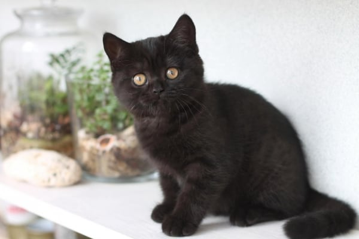

|  | ||
БританецИстория происхождения породы британских кошек берет начало еще в древние времена. Британская порода кошек или Британская короткошерстная кошка (БКШ, BRI/BRH) родом из Англии, известна с 19-го века. Британская кошка в своем породном классе участвовала в первой выставке и была признана лучшей кошкой. Впрочем, многие эксперты по породам, зная ее породные качества, сочетающиеся с великолепным характером, отдают ей предпочтение и сегодня. Из истории происхождения породы известно, что у истоков формирования породы были персидские кошки, отсюда во внешнем виде чуть плосковатая и круглая мордочка. |
||
ОписаниеБританцы – кошки компактные, мощные и хорошо сбалансированные, обладающие шикарной плюшевой шерсткой. Имеют крепкое и широкое тело. Коты крупного достаточно массивного размера, кошки чуть мельче. Вес короткошерстной кошки должен составлять от 3 до 5 кг, кота - от 5 до 7 кг. ХарактерБританских короткошерстных кошек называют «добрыми великанами». Они преданны людям и толерантны к другим животным. Британские короткошерстные кошки не требуют постоянного внимания со стороны человека и ведут себя тише, чем их ориентальные родственники. Кроме того, британцы не столь любопытны, как другие породы. |
||
|
||
| НА ГЛАВНУЮ |